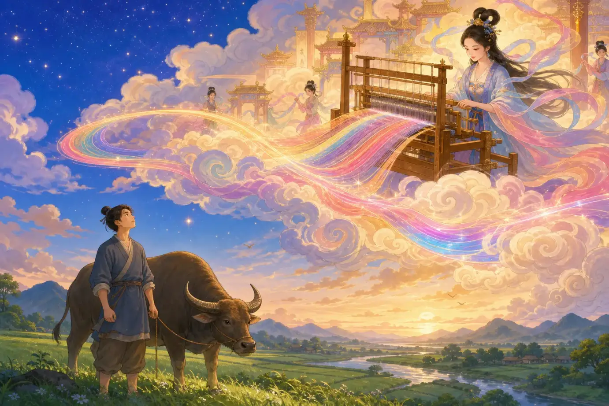
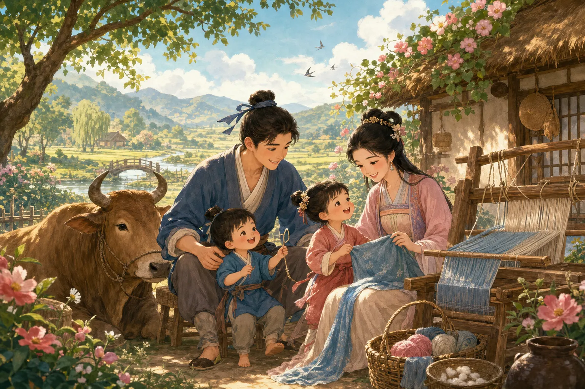
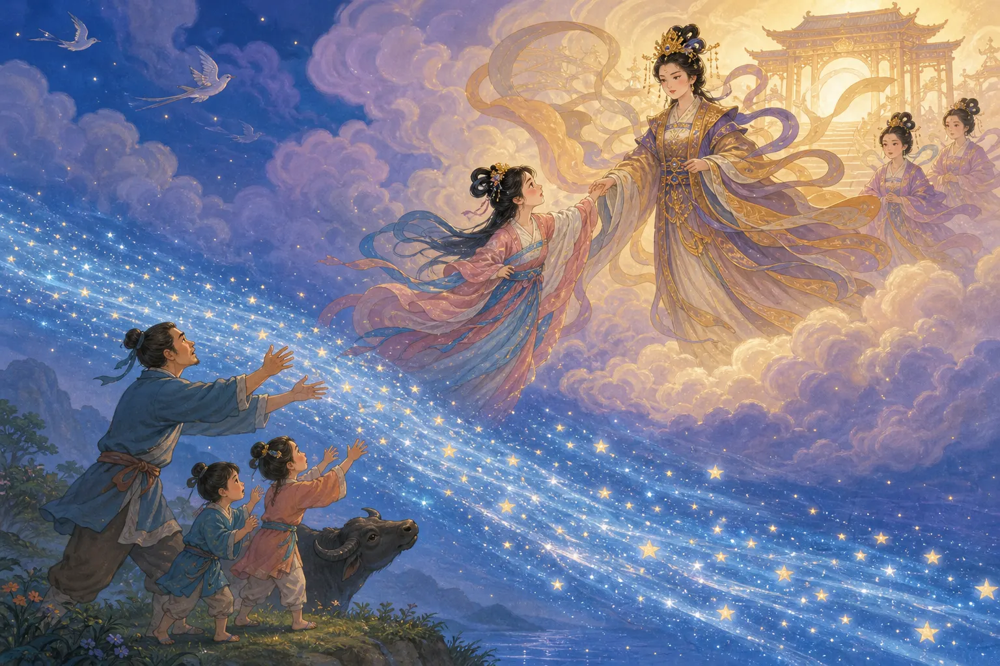
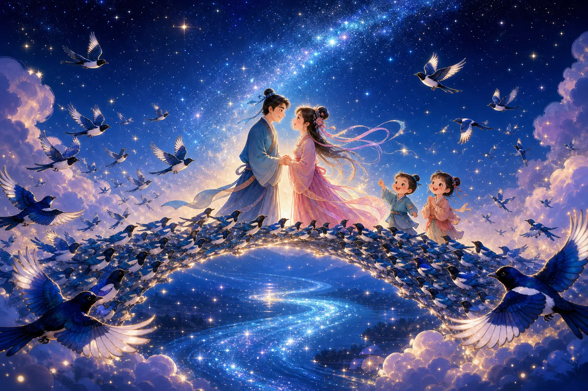

牛郎织女
The Cowherd and the Weaver Girl
Page 1
一个放牛，一个织云彩
He Cared for Cows. She Wove the Clouds.

The Cowherd lives in the human world with an old ox. The Weaver Girl lives in the sky and weaves shining clouds.
很久以前，人间住着一个年轻人。他每天照顾家里的老牛，所以大家叫他Niúláng · 牛郎织女传说中在人间放牛的年轻人。。“牛郎”的意思，就是放牛、照顾牛的人。
高高的天空中，住着一位Zhīnǚ · 牛郎织女传说中住在天上、擅长织布的女子。。“织女”的名字也和她的工作有关。她坐在织布机前，把一根根细线织成美丽的布。故事里还说，天上的彩云也是她织出来的。
织女坐在织布机前，常常低头看人间的青山、田野和河流。天上虽然美，她却很想亲眼看看人间的生活。她还注意到，牛郎总是独自和老牛一起干活。
一天，织女来到人间游玩。在河边，她终于遇见了牛郎。
Long ago, a young man lived in the human world with an old ox—an animal that looks like a cow and helps with farm work. He cared for the ox every day, so people called him Niúláng · 牛郎 · The young herder in the Cowherd and Weaver Girl legend.. A cowherd is simply someone who looks after cows.
High above him lived the Zhīnǚ · 织女 · The heavenly weaver in the Cowherd and Weaver Girl legend.. Her name came from her work too. She sat at a loom—a wooden frame for making cloth—and wove thread into beautiful cloth. The story says she also wove the colorful clouds in the sky.
From her loom, the Weaver Girl often looked down at the green hills, fields, and rivers below. Heaven was beautiful, but she wanted to see the human world for herself. She had also noticed the Cowherd working alone beside his old ox.
One day, the Weaver Girl came down for a visit. Near a river, she finally met the Cowherd.
Page 2
星星出来了，他们还在说话
The Stars Came Out, and They Were Still Talking

The Cowherd and the Weaver Girl make a home in the human world, where they work side by side and raise two children.
刚见面时，两个人都有一点害羞。可是很快，他们便聊了起来。牛郎讲地上的田野和那头陪着他的老牛。织女讲天上的云朵和她的织布机。
太阳下山了，星星出来了，他们还在说话。谁也不想这么快说再见。
后来，他们结了婚，在人间安了家。牛郎种田、照顾老牛，织女坐在院子里织布。不久，他们又有了两个孩子。房子虽然不大，一家人在一起的日子却又热闹又快乐。
At first, they were both a little shy. Soon they began to talk. The Cowherd told her about the fields and the old ox that kept him company. The Weaver Girl told him about the clouds and her loom.
The sun went down. The stars came out. They were still talking, and neither one wanted to say goodbye.
They married and made a home in the human world. The Cowherd worked in the fields and cared for the ox. The Weaver Girl wove cloth in the yard. Before long, they had two children. Their house was small, but it was full of work, laughter, and love.
Page 3
天空中出现了一条河
A River Opens in the Sky

The Queen Mother takes the Weaver Girl back to heaven and draws a shining river of stars between the family.
可是，天上有天上的规矩。在中国古代神话里，Xīwángmǔ · 中国神话中的重要女神，在牛郎织女故事中把两人隔在天河两边。是一位很有力量的女神，管着天上的规矩。她知道织女私自离开天上，还和人间的牛郎成了亲，便来把织女带走。
牛郎紧紧抱住两个孩子。他不能眼看着一家人就这样分开。故事说，那头老牛不是普通的牛。在老牛的帮助下，牛郎带着孩子飞上天空，眼看就要追到织女了。
王母娘娘拔下头上的金簪，在他们中间用力一划。呼啦！一道亮闪闪的天河横在了天空中。它就是银河——天气晴朗、四周很暗时，我们有时能看见的那条淡淡的星光。
But heaven had rules of its own. In old Chinese stories, the Xīwángmǔ · 王母娘娘 · A powerful goddess who separates the Cowherd and Weaver Girl in the legend. was a powerful goddess. She made sure everyone in heaven followed its rules. When she learned that the Weaver Girl had left heaven and married someone from the human world, she came to take her back.
The Cowherd held the children close. He had to try to bring the Weaver Girl back. The story says his old ox was no ordinary animal. With the ox's magic, the Cowherd rose into the sky carrying their children. They almost reached the Weaver Girl.
Then the Queen Mother pulled a golden pin from her hair and swept it across the sky. Whoosh! A shining river of stars opened between them. It was the Milky Way, the pale band of stars we can sometimes see on a clear, dark night. In this story, it became the River of Heaven.
Page 4
喜鹊飞来搭桥
The Magpies Build a Bridge

Hundreds of magpies fly side by side, making a bridge across the River of Heaven with their wings and backs.
织女站在天河的一边。牛郎和两个孩子站在另一边。河水太宽，他们谁也过不去。
这时，成百上千只喜鹊飞上天空。喜鹊是一种黑白相间、拖着长尾巴的鸟。它们一只挨着一只，用翅膀和后背搭成一座桥。一家人终于可以走过天河，再次拥抱在一起。
王母娘娘看见他们隔着天河仍然在等着彼此，后来终于答应让一家人每年见一次面。见面的日子是中国传统历法里的七月初七。这一天的夜晚叫“Qīxī · 农历七月初七的传统节日，与牛郎织女传说相连。”——“七”是七月初七，“夕”就是夜晚。过去，女孩子还会在这一天穿针、做手工，希望自己也能像织女一样有一双巧手。
The Weaver Girl stood on one side of the River of Heaven. The Cowherd and the children stood on the other. The river was too wide to cross.
Then hundreds of magpies flew into the sky. Magpies are black-and-white birds with long tails. They lined up wing to wing and made a bridge with their backs. At last, the family could cross the river and hold one another again.
The Queen Mother saw that the family was still waiting for one another. At last, she allowed them to meet once each year, on the seventh day of the seventh month in the traditional Chinese calendar—an older way of counting days and months. That evening is called Qīxī · 七夕 · The traditional festival on the seventh day of the seventh lunar month, linked with the Cowherd and Weaver Girl., which means “the evening of the seventh.” Long ago, girls also played games with thread and needles and made small crafts, hoping to become good at sewing and making things, just like the Weaver Girl.
今晚，喜鹊要去哪里？
Where Are the Magpies Going Tonight?
七夕的夜晚，如果你看见一只喜鹊从头顶飞过，可以想象它正急急忙忙赶去天河。桥的两边，还有一家人等着见面呢。
On a Qixi night, if you see a magpie flying overhead, you can imagine it hurrying toward the River of Heaven. A family is waiting for its bridge.